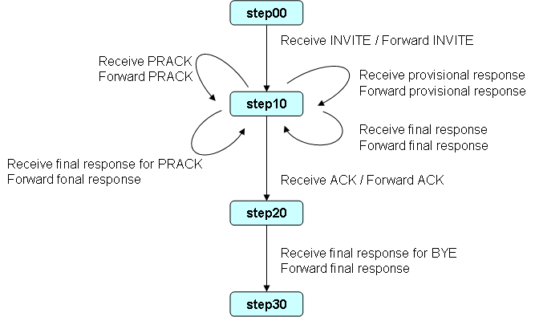

sf-flow-api
Add functions to application
if you use sf-flow, you can add functions to application more easily.
This page describes steps of adding "100rel" support.
Add the "100rel" support to B2BUA application
Needs of 100rel support
"100rel" support needs these changes.
- Send provisional response by using SipServletResponse.sendReliably
- When received PRACK request, forward request.
- When received final response for PRACK, forward response.
State transition diagram
The state transition diagram of application that supports "100rel" is Fig.87.
Fig.8 State transition diagram
Send provisional response by using SipServletResponse.sendReliably
If "100rel" is exist in the Supported or Require header of initial request, provisional response must be sent by SipServletResponse.sendReliably method.
Forward1xxAction using sendReliably is below.
public class Forward1xxAction {
@Transition("step10")
public void execute(SipServletResponse res) throws IOException, Rel100Exception {
// create new Response
B2buaHelper helper = res.getRequest().getB2buaHelper();
SipServletRequest orgReq = helper.getLinkedSipServletRequest(res.getRequest());
SipServletResponse res2 = orgReq.createResponse(res.getStatus());
SipContentUtil.copy(res, res2);
// send new Response
SipServletRequest req = res.getRequest();
boolean is100relSupported = SipHeaderUtil.isHeaderValueExist(req, "Supported", "100rel");
boolean is100relRequire = SipHeaderUtil.isHeaderValueExist(req, "Require", "100rel");
if (is100relSupported || is100relRequire) {
res2.sendReliably();
} else {
res2.send();
}
}
}
SipHeaderUtil is Utility Class. Please see the source this Class details.
When received PRACK request, forward request.
If received PRACK request, call the Action Class that forward PRACK. Changed SipRequest Class is below.
@TransitionSet(values={"action.forwardAck", "action.forwardReq"})
public class SipRequest {
@Evaluate
public String evaluate(SipServletRequest req) {
if ("ACK".equals(req.getMethod())) {
return "action.forwardAck";
} else {
return "action.forwardReq";
}
}
Type and run following command to generate ForwardReqAction.
$ mvn compile
Implementation of ForwardReqAction is below.
public class ForwardReqAction {
@Transition("step10")
public void execute(SipSession session, SipServletRequest req) throws IOException, Rel100Exception {
B2buaHelper helper = req.getB2buaHelper();
SipSession peerSession = helper.getLinkedSession(req.getSession());
// create new SipRequest
SipServletRequest newReq = null;
if ("PRACK".equals(req.getMethod())) {
List<SipServletMessage> pendings = helper.getPendingMessages(peerSession, UAMode.UAC);
SipServletResponse provisional = B2buaHelperUtil.getPendingResponse(pendings, "INVITE");
newReq = provisional.createPrack();
} else {
newReq = helper.createRequest(peerSession, req, null);
}
SipContentUtil.copy(req, newReq);
newReq.send();
}
}
When received final response for PRACK, forward response.
If received response for PRACK, call the Action Class that forward response. Changed SipResponse Class is below.
@TransitionSet(values={"action.forward1xx", "action.forwardResInv", "action.forwardRes"})
public class SipResponse {
@Evaluate
public String evaluate(SipServletResponse res) {
int status = res.getStatus();
String method = res.getMethod();
if ("INVITE".equals(method)) {
if (status < 200) {
return "action.forward1xx";
} else {
return "action.forwardResInv";
}
} else {
return "action.forwardRes";
}
}
}
Type and run following command to generate ForwardResAction.
$ mvn compile
Implementation of ForwardResAction is below.
public class ForwardResAction {
@Transition("step10")
public void execute(SipServletResponse res) throws IOException {
// create new Response
B2buaHelper helper = res.getRequest().getB2buaHelper();
SipSession peerSession = helper.getLinkedSession(res.getSession());
List<SipServletMessage> pendings = helper.getPendingMessages(peerSession, UAMode.UAS);
SipServletRequest orgReq = B2buaHelperUtil.getPendingRequest(pendings, res.getMethod());
SipServletResponse orgRes = orgReq.createResponse(res.getStatus(), res.getReasonPhrase());
SipContentUtil.copy(res, orgRes);
// send new Response
orgRes.send();
}
}
As above, you can add functions to application more easily.
Next page is demonstration of B2BUA application.